画像処理とは、
電子工学的（主に情報工学的）に画像を処理して、別の画像に変形したり、画像から何らかの情報を取り出すために行われる処理全般を指す。
（Wikipediaの画像処理より）
ブロブ（Blob）とは塊のことです。
画像を2値化した後、ラべリングを行い、ラベル付けされた塊の面積、位置、長さなどの特徴量を解析することをブロブ解析と言います。
本記事では、ImageJのサイトにある以下のサンプル画像に対して、画像処理を行い、ブロブ解析し、丸いドット（28個）の位置と面積を調べたいと思います。
ポイントは、右上の薄いドットをどう抽出するかです。
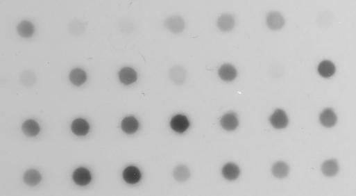
画像は自分のPCに保存してください。
ImageJに、Calculator Plus（ミラー）をインストールします。
方法は、リンク先に移動し、「Calculator_Plus.class」を「pluginsフォルダ」にコピーし、ImageJを再起動します。
以下の手順を行ってください。
ImageJで、自分のPCに保存した「Dot_Blot.jpg」を開きます。
メニューの Image ⇒ Adjust ⇒ Threshold を実行します。上下のスライダーで挟まれた範囲は赤色で、それ以外はグレイで表示されます。
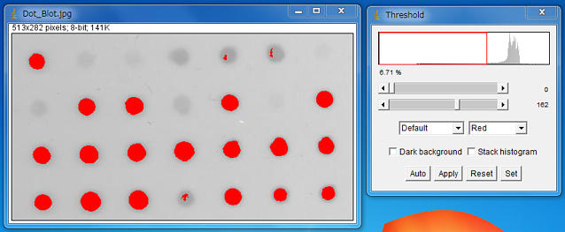
下のスライダーを右にスライドさせて、右上のドットを赤くしようとすると、左側は赤く塗りつぶされてしまいます。
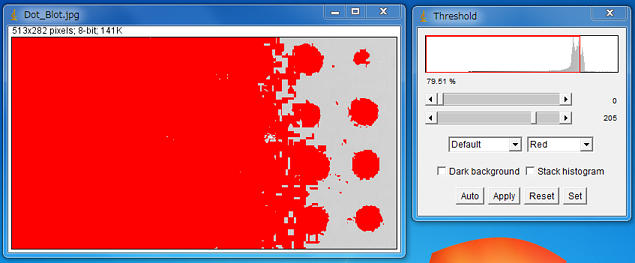
単純な2値化処理では、全てのドットを抽出することはできないようです。
「Dot_Blot.jpg」の背景は、左と右で背景の輝度が違うようです。
今回は、Meanフィルタを利用した背景除去を行います。こちらを参考にしてください。
画像処理のフローとしては、以下を行います。基本的なフローの一つだと思います。
では、以下の手順で行ってください。
「Dot_Blot.jpg」ウィンドウを選択して、
メニューの Image ⇒ Duplicate ⇒ Titleに「Dot_Blot.jpg_Mean」を入力して実行します。
「Dot_Blot.jpg_Mean」ウィンドウを選択して、
メニューの Plugins ⇒ Filters ⇒ Fast Filters を実行します。
Filter Type = mean
xRadius = 31
yRadius = 31
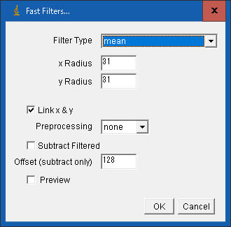
平滑化の結果
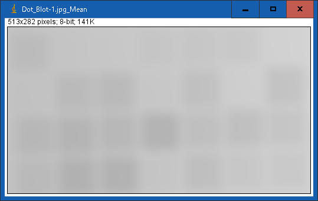
次に、差分を実行します。メニューの Plugins ⇒ Calculator Plus を実行します。
i1 = Dot_Blot.jpg
i2 = Dot_Blot.jpg_Mean
Operation = Substruct
k1 = 1.0
k2 = 194.0（「Dot_Blot.jpg」の平均輝度）
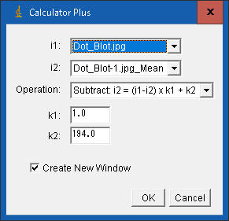
差分の結果
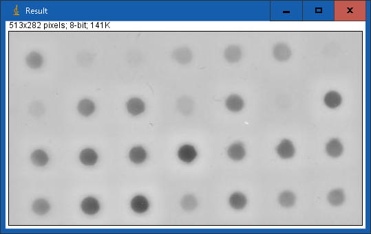
メニューの Image ⇒ Adjust ⇒ Threshold を実行し、下のスライダーを右にスライドさせて、値を 192 にします。
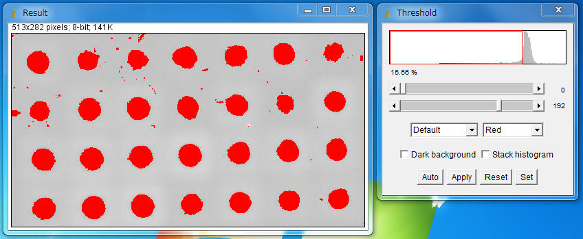
次に2値化の準備をします。
メニューの Process ⇒ Binary ⇒ Options ⇒ Black background をONにします。
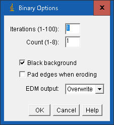
メニューの Process ⇒ Binary ⇒ Convert to Mask で2値化します。
2値化処理の結果
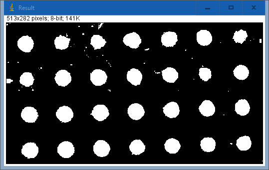
メニューの Plugins ⇒ Filters ⇒ Fast Filters を実行します。
Filter Type = minimum
xRadius = 5
yRadius = 5
収縮処理の結果
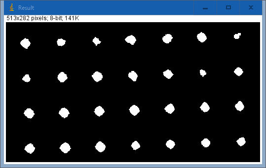
メニューの Plugins ⇒ Filters ⇒ Fast Filters を実行します。
Filter Type = maximum
xRadius = 5
yRadius = 5
膨張処理の結果
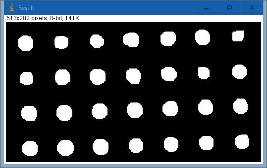
ImageJには、Analize Particlesというブロブ解析用のコマンドがありますので使います。
「Result」ウィンドウを選択して、
メニューの Analize ⇒ Analize Particles を実行します。
下のように設定して、実行します。
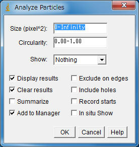
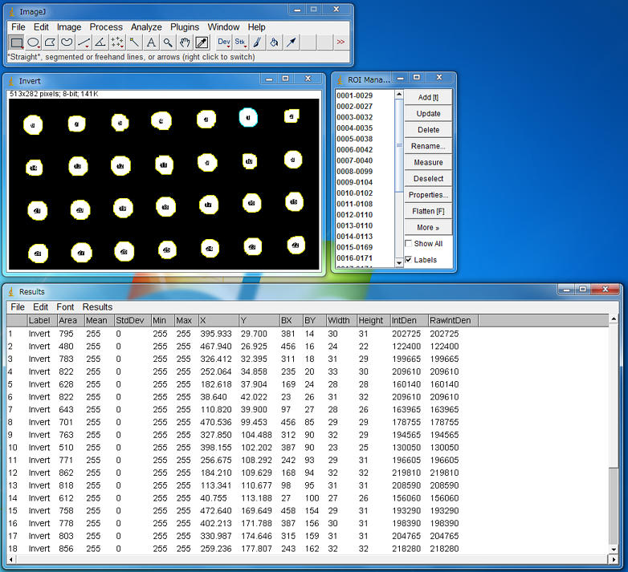
ドットを抽出することができました。位置（X、Y）や大まかな面積（Area）などを調べることができます。
計測する特徴量を変えたい時には、メニューの Analize ⇒ Set Measurements で設定してください。
今回はブロブ解析の対象が白になっていると思いますが、黒にしたい場合は、メニューの Process ⇒ Binary ⇒ Options ⇒ Black background をOFFにします。
以上の処理をマクロにしてみました。
title = getTitle();
title_mean = title + "_Mean";
title_result = title + "_Result";
// Duplicate
selectWindow(title);
run("Duplicate...", " ");
rename(title_mean);
// Mean
selectWindow(title_mean);
run("Fast Filters", "link filter=mean x=31 y=31 preprocessing=none offset=128");
// Substruct
selectWindow(title_mean);
run("Calculator Plus", "i1=" + title + " i2=" + title_mean + " operation=[Subtract: i2 = (i1-i2) x k1 + k2] k1=1 k2=194 create");
rename(title_result);
// Binarize
selectWindow(title_result);
setThreshold(0, 192);
setOption("BlackBackground", true);
run("Convert to Mask");
// Minimum filter
selectWindow(title_result);
run("Fast Filters", "link filter=minimum x=5 y=5 preprocessing=none offset=128");
// Maximum filter
selectWindow(title_result);
run("Fast Filters", "link filter=maximum x=5 y=5 preprocessing=none offset=128");
// Analyze Particles
selectWindow(title_result);
run("Analyze Particles...", "display clear add");メニューの Plugins ⇒ New ⇒ Macro を実行します。上のマクロをコピー＆ペーストしてください。
「Dot_Blot.jpg」ウィンドウを選択して、
Macros ⇒ Run Macro を実行してください。
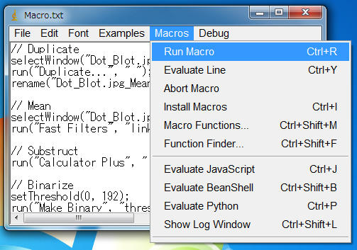